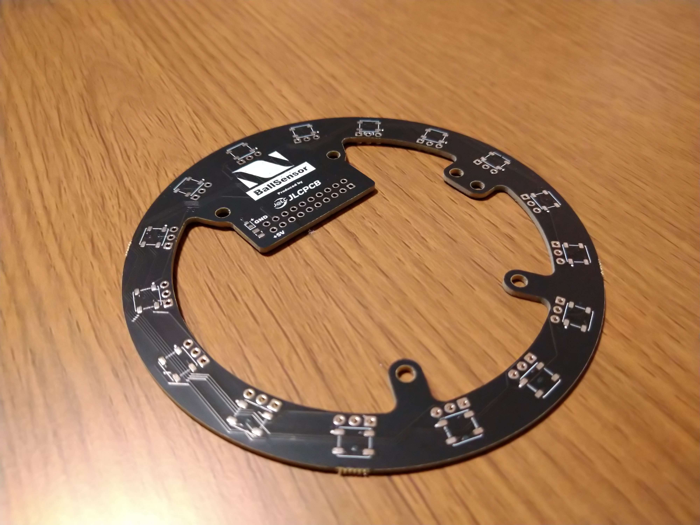
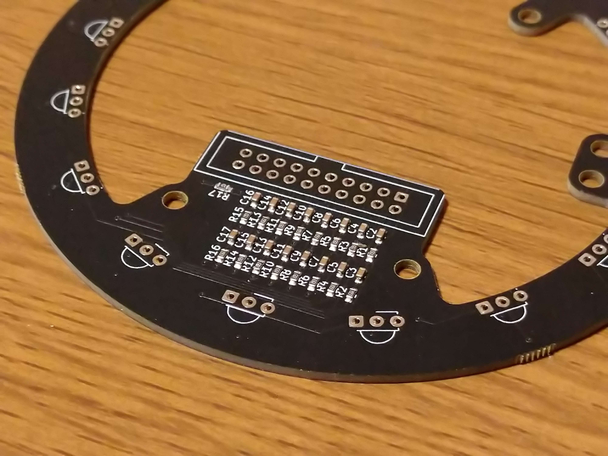
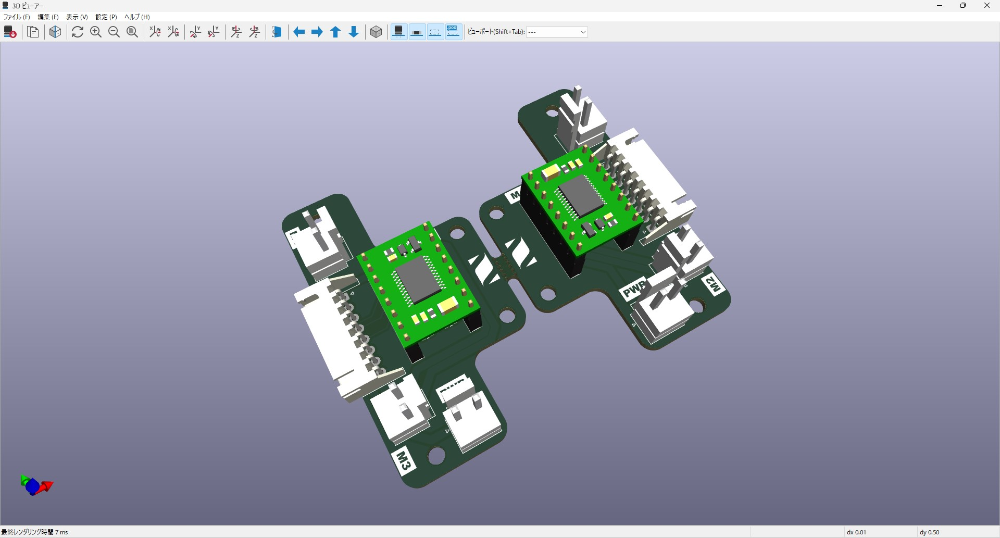
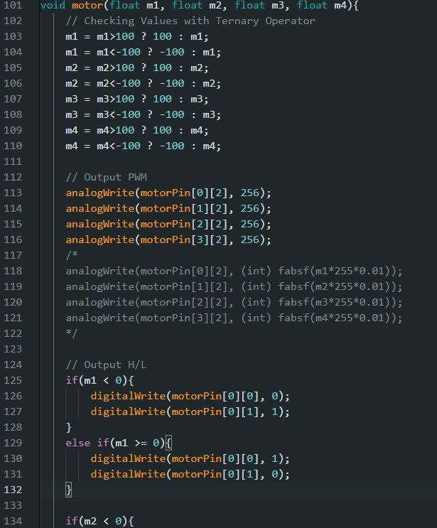
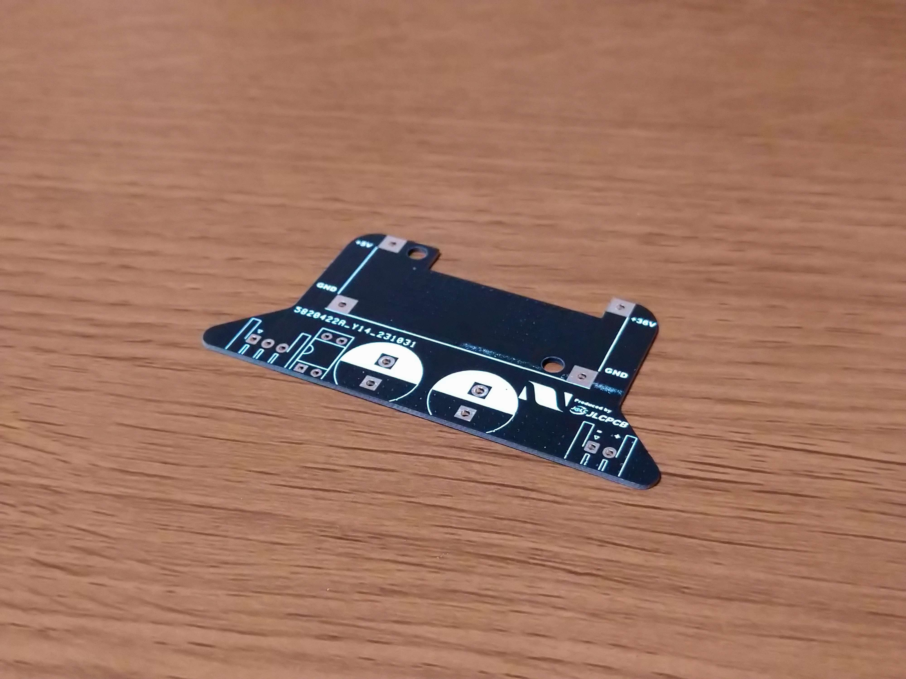

TOINIOT² Blog
基板ったら基板。Yay!
2023-11-21 Writer: NearFactory & 010
遂に! 待ちに待ったボールセンサ基板の登場です!
今回は、ボールセンサ基板、モータードライバ基板、キッカー基板を発注したことについての記事です。ぜひ見ていってください。
今回の基板もJLCPCB様に発注させていただきました。JLCPCB様、ありがとうございます!
それでは早速、本題の発注した基板の紹介から参りましょう!
今回発注した
・ボールセンサ基板
・モータードライバ基板
・キッカー基板
の順に紹介していきます。
1. ボールセンサ基板

今回発注したボールセンサ基板は、チーム初挑戦の4層基板で発注させていただきました。
「4層基板ってなぁに?」
4層基板とは、基本となる表裏の2層の銅箔に加え、その表裏の間の基板の内層と呼ばれる部分にもう2層銅箔を加え、合計4層の銅箔を使用している基板のことをいいます(厳密性は無視させてください)。
初めは2層基板での設計を行っていたのですが、真ん中の部分をカメラを使用するために大きく肉抜きしなければならず、PCB設計時に配線が余りにも難しいことから4層基板に挑戦しました。
結論から言います。ぶっちゃけ4層基板の必要性はそこまでありません。
4層基板とは言っても、内層には部品を置くことができず、配線をひいたりベタのパターンを作成したりするしか使い道がありません。なので、RCJのサッカー競技であれば、よほどの高度な技術を使用したりしない限りは、基本的に2層基板での設計で事足りるのではないか、という結論に至りました。
もちろん、4層基板は内層に電源とGNDのベタパターンを広くとることができるので、ノイズ対策としては効果的かもしれません。そういった目的で4層基板を設計するのはアリなのではないかとおもいます。
この4層基板、先述した通り他基板と同じくJLCPCB様に発注させていただいたのですが、1つだけ問題点がありました。それは
「マイクロビアが使用できない」
という点です。JLCPCBの生産する基板は品質もよく、生産ミスを見たことがないのですが、JLCPCBでは「マイクロビア」を使用した設計は現在受け付けていないそうです（2023.11.21時点）。
「マイクロビアってなぁに?」
マイクロビアとは、4層以上の基板に使用されることがある、一般の表層から裏層までを貫通するビアを異なり、表層から内層1まで、や内層1から内層2まで、のような基板を貫通しないビアのことです。
私の設計していた基板はマイクロビアを使用していたので、発注していざ生産、というときに「マイクロビアできないよ」というメールを頂き、再注文という形を取らせていただきました。
しかし、JLCPCBでは、4層基板を生産する際、その品質を高品質に保つため「4-Wire Kelvin Test」というテスティングを行うことを推奨しているそうです。追加の料金はかかりますが、これをやっておけば基板の品質が保たれるので、とても助かる提案だと思います。

ちなみに、このボールセンサ基板は私が設計したのですが、一番のこだわりポイントは裏面のチップ抵抗・チップコンデンサの集合部分です。ここでは、16コあるボールセンサのそれぞれのシグナルをローパスフィルタを通して高周波のノイズを除去しています。ここめっちゃ大変だった。うん。マジで。
2. モータードライバ基板

モータードライバ基板。私たちは今回 TB6612FNG というMDをを使用しました。このMDは電流値が小さいのでRCJにはあまり向かないMDですが、モーターの選定に気を付ければ使うことは十分可能だといえるMDです。
さて、このモータードライバ基板なのですが...、実は到着後基板とにらめっこをしているうちにあることに気が付きました。それは...
設 ・ 計 ・ ミ ・ ス
このことに気づいた私は、すぐに設計した回路図とPCBエディタ上の基板を見比べ、最終的には空中配線を1本行ってなんとかやり過ごしました。
設計ミス、ダメ。ゼッタイ。
とまぁ冗談で言ったりしていますけれども、案外設計ミスから学べる事って多いですね。これまでは一度設計した基板を改めて見つめなおす機会がなかったものの、1つ基板に設計ミスが見つかると「本当に他にミスがないか?」と血眼になって探すものです。そうすると「ここはこの設計よりもこっちに直した方がいいかもな」「この配線もっと太くした方がいいかな」「ここはんだしにくいから部品配置変えようかな」などと様々な構想が湧き出てきます。存外、設計ミスも馬鹿にならないものですね。まぁ基盤を再発注する手間を考えるとそれでもトントンとは言えないですが...。
さて、紆余曲折ありましたが、なんとか完成したモータードライバを使用してモーターを回してみると...
回 ・ ら ・ な ・ い
私は首をかしげました。なんで??? 基板のミスは全て完璧に直したはずだしなぁ、となるとミスは...
プログラム？
そこでプログラムを見てみると...

「あった! ミスあった!」
なんと、analogWriteのfrequency (周波数) の数を256にしていたのです!（入力範囲:0-255）
これを直して見ると...「動いた、うごいた!!!!!」
最後までひやひやしましたが、なんとか動かすことができたモータードライバ基板でした。
3. キッカー基板

高級感のある黒!
美しい金属メッキ!
よし、レビュー完了!(๑•̀ㅂ•́)و✧
すみません冗談です。真面目にレビューします。
僕たちのチームのロボットのキッカー基板は、6.6V出力のバッテリーが詰まれています。ということは、モーターやCPUは少し調圧すればすぐに動かすことができます。しかしそうはいかないのがキッカー。ボールをパーン!って前に押し出してカッコよく(?)ゴールを決めるための気候ですね。もしこれを7.2Vで動かそうもんなら..
......コン......。
で終わります。ゴールなんで夢のまた夢です。では、どうすればうまくいくのか...。
電圧を挙げてキッカーの威力を強くすればいい(≧∇≦)b
それをかなえるために必要なのが昇圧回路。正確にいうと昇圧自体を行うのは市販品として売っているもの（XL6009を使用）なんですが、それだけで使うことが難しいので、他のロボットの部品との接続コネクタや安全装置を設置するために基板を設計しました。
ここまで長々とキッカー基板の必要性について話してきましたが、ここからが本題。なんでその基板をJLCPCB様に発注したのか。主な理由は2つあります。
1. 確実性
これは他の基板にも言えることではありますが、シンプルにミスがないんです。JLCPCB様と出会うまで、僕たちはエッチングという方法で基板を自作していました。しかしまぁ、本当に失敗が多い。今までいったいどれだけの銅板を無駄にしてきたのか....
それに比べ、JLCPCB様から届いた基板に欠陥品が混じっていたことは一度もありません。届いたものが確実に使える。これ、地味に聞こえるかもしれませんが、結構重要なことなんです。
2. 安全性
1と繋がってくる部分はあるかと思いますが、ロボットを作る上でこれだけは譲れないのではないでしょうか。特にショートはダメージ大です。ショート発生箇所はもちろんのこと、その周辺もろとも まっくろくろすけ にしてしまいます。最悪の場合、ロボットの全解体、部品の大がかりな再発注に至る可能性も。それらを避けるためにもやはりリアルな炎上は避けたいところ。そのためにもっとも必要なのが、電気系統をしっかりしておくことです。
たとえば、大電流が流れるところは配線を太くする、回路設計を間違えないなど。しかし仮にこれらを完璧にクリアしていても、必ずしもうまくいくとは限りません。なぜなら、害虫はもちろん、自作でもエッチング液につけてしまえば見守るしかない。「印刷」の工程で不備が出てきてしまったとき、その箇所を特定するのはおろか、発見することすらできない可能性があります。そしてこの基板を手に入れるまでの一連の流れの中で、もっとも信頼性が必要な部分を安全かつ確実に進めてくれるのだJLCPCB様、というわけです。
ここまで長々と書いてしまいましたが、言いたいことはただひとつ。JLCPCB様、ありがとうございました。そして、次回もよろしくお願いします!
では、今日はこの辺で。
最後まで読んでいただきありがとうございました。また次の記事でお会いしましょう!
 ↓ JLCPCB様のホームページはこちらから
↓ JLCPCB様のホームページはこちらから
https://jlcpcb.com/
↓ 今ならクーポンゲットのチャンス！
https://jlcpcb.com/JPV
JLCPCBでは、今回使わせていただいた基板製造以外にも、前回紹介した3Dプリント、CNCフライスを用いた金属加工など、様々なサービスを行っています。
気になる方はHPをチェック！
今回のボールセンサ基板では4層基板を発注しましたが、JLCPCBでは最大で20層基板まで対応しているそうです! また、PCBAサービスも高品質で最高です! ぜひ試してみてください!